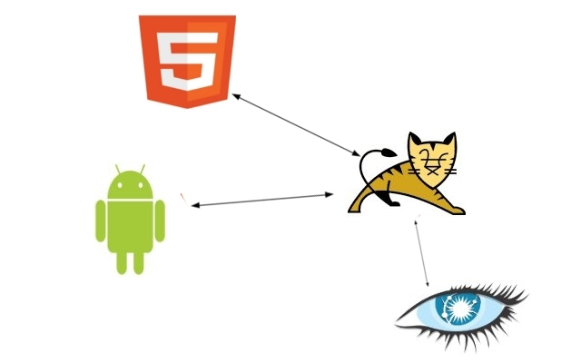
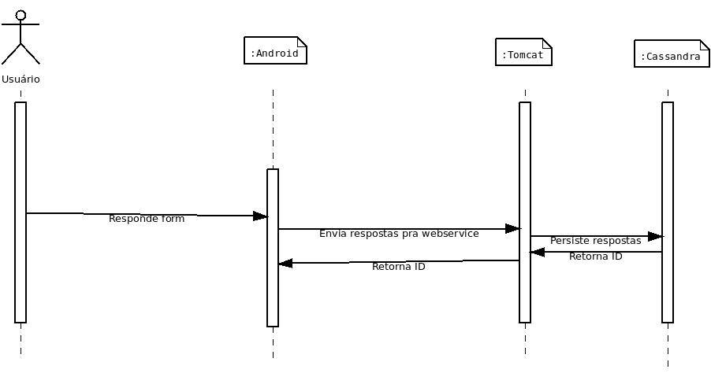

TOMCAT
A componente
Essa componente é responsável pela disponibilização dos serviços de persistência e recuperação dos formulários
editados na componente HTML5 e das respostas feitas no sistema móvel da componente
Android, para tanto foi utilizado um conjunto de Servlets
para a prestação dos referidos serviços, para publicação destas últimas foi utilizado como container o servidor web Java Tomcat.
Resumindo, essa componente é a interface entre as outras: HTML5,
Android (Clientes) e Cassandra (Servidora).
Servlets
Para cada cliente da componente foi implementado os dois serviços (Persistência e Recuperação), possibilitando a total troca de mensagens entre Clientes e servidora. Para a componente HTML5:
- Persistência dos formulários editados;
- Recuperação dos formulários persistidos.
Para a componente Android:
- Recuperação dos formulários persistidos pela HTML5;
- Persistência das respostas aos formulários.
Mapeamento
A componente Cassandra disponibilizou uma interface de conexão, criação/inserção e seleção dos dados do banco. Para cada tipo de dado deve-se criar um classe java que extenda a interface da componente servidora, isso possibilita a criação e inserção dos dados nas sua devidas tabelas.
Foram criadas duas classes modelo:
- Questionário, que encapsula os formulários;
- Resposta, encapsula as respostas.
Cluster
A clusterização de servidores é o processo de criar um grupo de servidores, ligados em rede, que utiliza um software (nesse caso o Apache e o Apache Tomcat) para dividir as tarefas entre eles para possibilitar um acesso contínua, uniforme e transparente aos serviços. Para a disponibilização dos webservices implementados nessa componente foi utilizado um cluster Tomcat de três máquinas:
- Kay1, IP: 172.20.9.142;
- Kay2, IP: 172.20.9.143;
- Kay3, IP: 172.20.9.144;
Em cada uma foi replicado o conjunto de webservices.
Casos de uso

Imagine um professor que queira fazer um estudo socio-econômico anônimo de uma classe do ensino médio. Usando seu notebook em casa, ele prepara os questionários e os grava .
Estudantes respondem a um formulário carregado na componente Android em celulares. E nosso querido professor persiste os dados mais tarde.
Código
Questionario.java
Encapsula e mapeia os formulários.Questionário
Resposta.java
Encapsula e mapeia as respostas de formulário.Resposta
SaveXML.java
Serviço de persistência de uma string contento um XML.SaveXML
GetXML.java
Serviço de recuperação de uma string contento um XML.GetXML
ListXML.java
Lista todas os registros nas classes mapeadas.ListXML
SaveAnswers
Serviço de persistência de uma resposta a um formulário.SaveAnswers
GetAnswers.java
Serviço de recuperação de uma resposta a um formulário.GetAnswers
ListAnswers.java
Lista todas os registros na classe mapeada.ListAnswers
PSFUtils
Encapsula a conexão ao Cassandra.PSFUtils